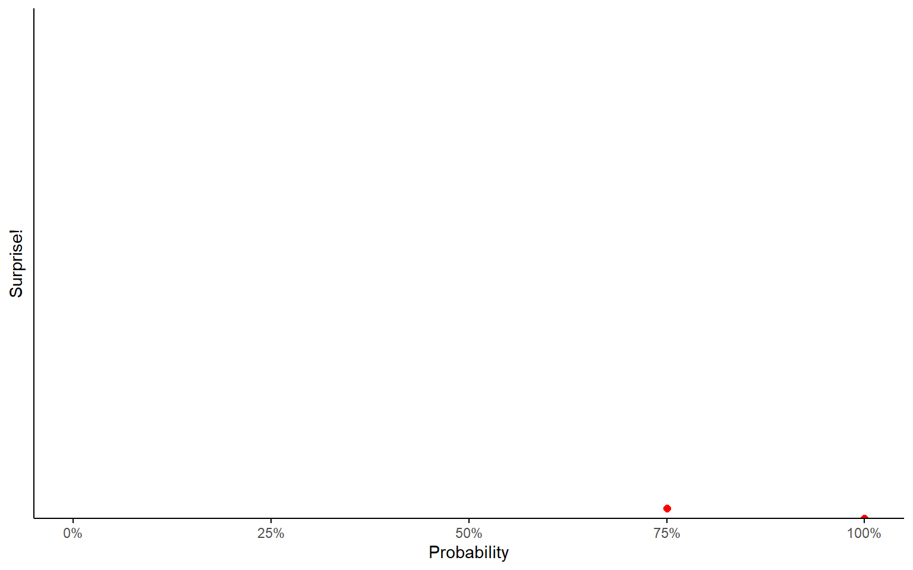

Information Theory
POLS 3220: How to Predict the Future
Let’s Play Another Game!
I’m going to write a sequence of three numbers on the board.
Your goal is to guess what “rule” these numbers follow (e.g. “all the numbers must be positive”).
You can shout any sequence of three numbers at me, and I’ll tell you if it satisfies the rule.
When you think you know the rule, write it down on a slip of paper and bring it up front.
- First person to guess correctly wins.
Discuss
What did we learn about ourselves?
Confirmation Bias
- Confirmation bias is the tendency of people to seek out information that confirms their pre-existing beliefs.
- This is particularly true in when we’re arguing about politics (Taber and Lodge 2006).
“So convenient a thing is it to be a rational creature, since it enables us to find or make a reason for everything one has a mind to.”
- Benjamin Franklin
Confirmation Bias
This tendency makes playing our opening game difficult.
The most common strategy is to focus in on a particular rule, then keep guessing number sequences that satisfy the rule.
But the optimal strategy is to guess sequences that narrow down the set of possible rules.
- If you think the rule could be “double each number” or “all numbers are even”, don’t guess 4-8-16!
Active Open-Mindedness
- The opposite of confirmation bias is what psychologists call active open-minded thinking (AOMT).
Active Open-Minded Thinking
I’m skeptical that asking these questions is a great way to measure AOMT.
Active Open-Minded Thinking
Not many people disagree with the statement: “A person should always consider new information.”

Information
What is “information”, anyway?
Let’s briefly dip our toes into information theory, a branch of mathematics that deals with, well, information.
Intuitively, information is something that shifts our beliefs.
The more surprising a piece of information is, the more it should shift our beliefs.
In a deep sense, information = surprise (Shannon 1948).
Surprise
How surprised would you be to learn that an event happened?
Depends on how probable you thought the event was!
Surprise
Surprise
If you were 100% sure an event would happen, you wouldn’t be surprised at all to learn that it happened.
- “The sun rose in the east today.”
Surprise
Surprise
If you thought there was a 75% chance of it happening, you still wouldn’t be very surprised.
- “I found my shoes on the shoe rack this morning!”
Surprise
Surprise
If you thought there was a 50-50 chance, you’d be kinda surprised.
- “The coin landed on heads!”
Surprise
Surprise
If you thought there was only a 25% chance, now this would be surprising information.
Surprise
Surprise
If you thought there was only a 5% chance, you’ve reached what statisticians would call “statistical significance”.
You’ve observed an event you really didn’t expect to see!
Maybe your theory was wrong!
Surprise
Surprise
If you thought there was a 1-in-1,000 chance, now it’s downright shocking!
- Learning this information should change how you think about the world.
Surprise
Surprise
1-in-a-million chance?
This is, like, winning the lottery level of surprise.
Heart-attack-inducing surprise.
Surprise
Surprise
Notice the shape of the curve we’re drawing here. Surprise increases exponentially as we get closer to \(P(x) = 0\).
Surprise
Surprise
This looks an awful lot like the charts I was showing you in the lecture on Long Tails.
What I’m arguing is that the amount of information revealed by an event is a logarithmic function of how probable you thought it was.
Surprise
Information
- This idea motivates the mathematical definition of information content.
\[ I(x) = -\text{log}(P(x)) \]
This function tells you, in essence, how much you learn from observing a piece of information.
A unit of information is called a bit.
Information Entropy
This leads us to a related concept, called entropy (“average surprise”).
- “On average, how much information do you expect to learn by observing an event?”
An event with probability 100% has zero entropy.
- Because you get 0 bits of information when it happens. And it always happens.
An event with probability \(\frac{1}{1,000,000}\) also has no entropy.
- You get about 20 bits of information if it happens, but it basically never happens!
Entropy
Entropy
When seeking out information, your goal should be to decrease entropy as much as possible.
This idea will be particularly useful after the midterm, when we start discussing machine learning.
But we can also apply it to the game we played at the start of class.
Guess The Rule
I observe that “2-4-8” satisfies the rule.
A lot of potential rules here: (1) numbers go up, (2) second number goes up, (3) third number goes up, (4) all evens, (5) all positives, (6) sums to 14
If I think these six rules are equally likely, then my entropy is \(-\text{log}(\frac{1}{6}) \approx 2.6\).
The move that decreases entropy the most is one that splits the set of hypotheses in half, like “8-4-2”. No matter what happens, entropy will decrease to \(-\text{log}(\frac{1}{3}) \approx 1.6\).
Wisdom of Crowds
Here’s a final perspective on what’s happening with the “wisdom of crowds”.
Individuals are prone to confirmation bias. We tend to look for information that confirms our theories (“4-8-16”).
But in a large enough crowd of people, you’ll end up with a diverse set of theories.
If everyone looks for information that confirms their theory, then the group ends up finding a bunch of information that collectively decreases entropy.